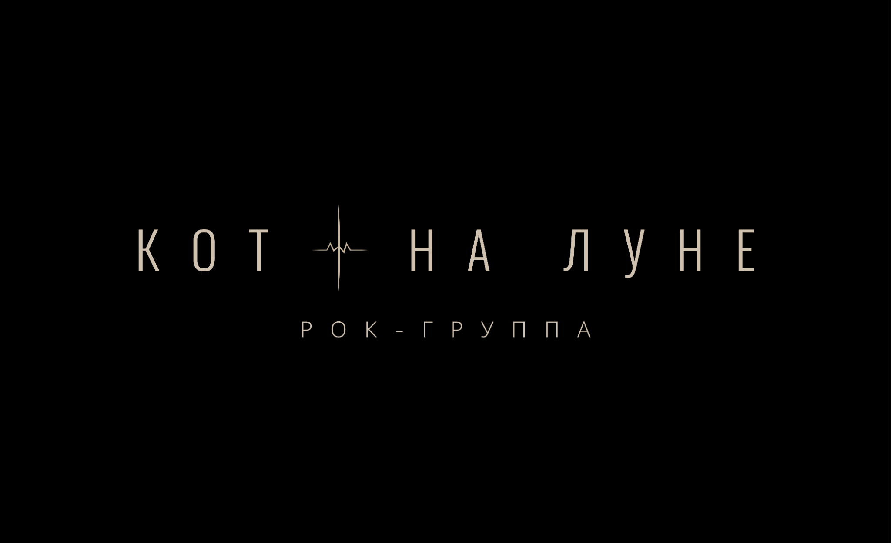
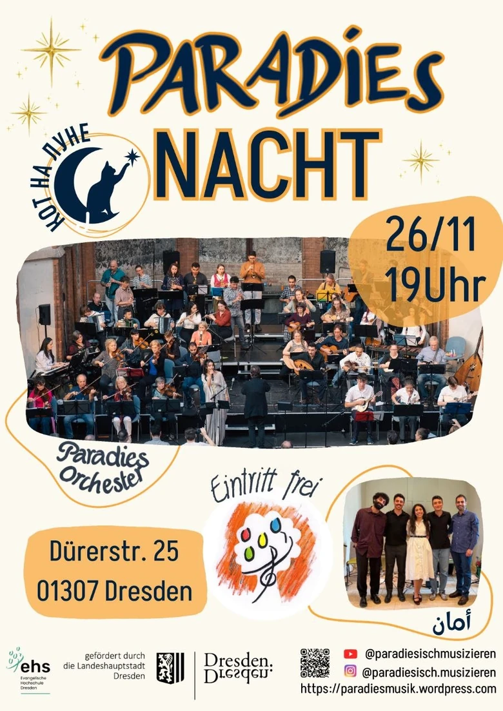

Кот На Луне · Kot Na Lune

Рок, который
задевает душу.

О группе
Мы — группа из Дрездена, сочетающая классические рок-мотивы с яркими эмоциями и звучанием, которое невозможно забыть. В наших песнях — глубокая лирика, гитары с характером и живая энергетика, находящая отклик в каждом слушателе. Мы верим, что музыка — это мост между людьми, и стремимся объединять через искренние истории и мощное звучание.
🎤 Сергей Желеховский — вокал, ритм-гитара
🎸 Алексей Позняковский — вокал, соло-гитара
🎸 Николай Хеннеберг — бас-гитара
🎹 Антон Шабанов — синтезатор
🥁 Олексей Калашников — барабаны
🎵✍️ Стихи и музыка — Сергей Желеховский
Концерты

26.11.2026
Paradies Nacht
Dürerstr. 25 · 01307 Dresden
Начало в 19:00 · Вход свободный
Музыка
История
- 14.11.2026 — Концерт · ZMO · Dresden
- 03.10.2026 — Концерт · Zentralwerk · Foyer · Dresden
- 06.06.2026 — Festival der Kulturen · Trinitatiskirche · Dresden
- 18.04.2026 — Выступление в прямом эфире · coloRadio · Dresden
- 28.02.2026 — Концерт · Robolino · Dresden
- 29.12.2025 — Отчетный концерт · Robolino · Dresden
- 06.09.2025 — Концерт · ZMO · Dresden
- 30.08.2025 — Акустический концерт · Robolino · Dresden
- 28.06.2025 — Совместный концерт с группой «Чесно» · Robolino · Dresden
- 07.06.2025 — Festival der Kulturen · Trinitatiskirche · Dresden
- 12.04.2025 — Презентация альбома · Robolino · Dresden
- 19.01.2025 — Отчетный концерт · Robolino · Dresden
- 08.06.2024 — Театральный концерт · Robolino · Dresden
- 19.01.2024 — Концерт · Robolino · Dresden
- 12.2023 — Первый концерт · Kolibri · Dresden
Концерты и контакты
Концерты · Фестивали · Сотрудничество
Встретимся на сцене.
По вопросам организации концертов, участия в фестивалях и музыкального сотрудничества пишите нам.
Дрезден · Германия
Ответственный за сайт: Nikolay Henneberg · Дрезден, Германия